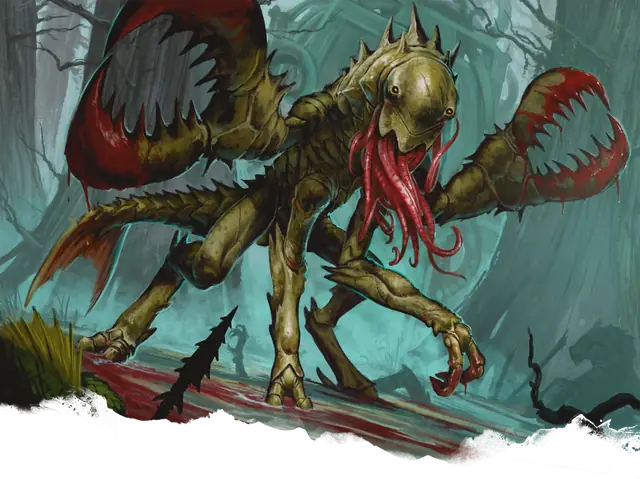

Чууль
Chuul
Большая Аберрация, Хаотичная Злая

Класс Защиты 16 Инициатива +0 (10)
Хиты 76 (9к10 + 27)
Скорость 30 футов, Плавания 30 футов
| мод | спас | ||
|---|---|---|---|
| СИЛ | 19 | +4 | +4 |
| ЛОВ | 10 | +0 | +0 |
| ТЕЛ | 16 | +3 | +3 |
| мод | спас | ||
|---|---|---|---|
| ИНТ | 5 | −3 | −3 |
| МДР | 11 | +0 | +0 |
| ХАР | 5 | −3 | −3 |
Иммунитеты Яд; Отравленный
Чувства Тёмное зрение 60 футов, пассивное Восприятие 14
Языки Глубинная речь (понимает, но не говорит)
Опасность 4 (1 100 опыта; БВ +2)
Особенности
Амфибия. Чууль может дышать как воздухом, так и под водой.
Чувство магии. Чууль чувствует магию в пределах 120 футов от себя. Во всём остальном эта особенность работает как заклинание Обнаружение магии, но не имеет магической природы.
Действия
Мультиатака. Чууль делает две атаки Клешнёй и использует Парализующие щупальца.
Клешня. Бросок рукопашной атаки: +6, досягаемость 10 фт. Попадание: 9 (1к10 + 4) Дробящего урона. Если цель — существо Большого размера или меньше, она получает состояние Схваченный (Сл освобождения от захвата 14) от одной из двух клешней.
Парализующие щупальца. Спасбросок Телосложения: Сл 13, одно Схваченное чуулем существо. Провал: Цель получает состояние Отравленный и повторяет спасбросок в конце каждого своего хода, при успехе оканчивая на себе этот эффект. Через 1 минуту цель автоматически преуспеет в этом спасброске. Пока у цели есть состояние Отравленный, у неё также есть состояние Парализованный.
Бонус мастерства +2
Среда обитания Болота, Прибрежье, Подземье
Сокровища Реликварные
Чууль
Хитиновый слуга первобытных сил
Чуули появились в забытые эпохи, когда аболеты и создания ещё более чуждые правили неведомыми империями под толщей волн. Чтобы добывать новую магию и новых существ для своих целей, аболеты превратили множество глубоководных хищников в слуг, способных выходить за пределы морей. Чуули — самые живучие из этих причудливых порождений.
Многие чуули служат властелинам-аболетам, исполняя их прихоти в бессолнечных морях и первобытных топях. Другие подчиняются иным хозяевам-Аберрациям — таким как бехолдеры, греллы или свежеватели разума. Некоторые чуули следуют собственным инстинктам: бесконечно собирают древние магические сокровища или, по-своему трактуя вековые приказы, занимаются неведомыми делами. Каковы бы ни были их цели, чуули сперва захватывают добычу огромными клешнями, а затем обездвиживают врагов с помощью парализующих щупалец.
Чуули не стареют и могут тысячелетиями лежать в спячке в потаённых местах, пока их не пробудят угроза, древний приказ или неведомое побуждение.